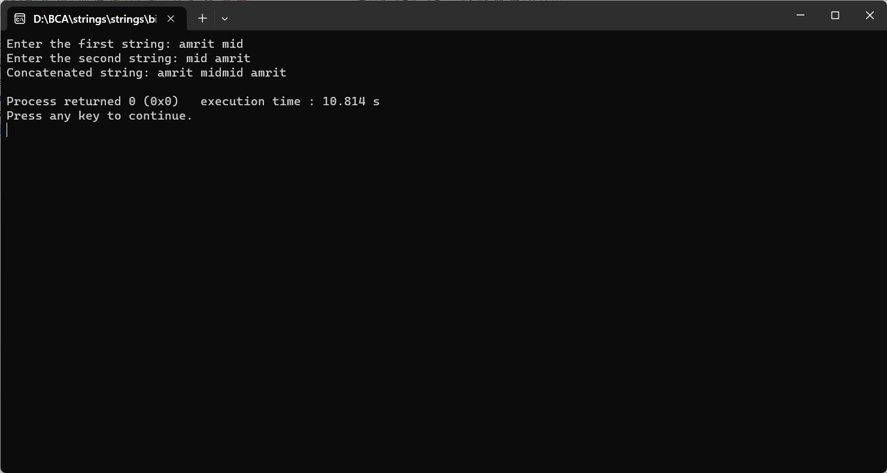

ENTER TWO STRINGS FROM USER AND CONCATENATE THOSE STRINGS IN ANOTHER STRING AND DISPLAY THE ANSWER
#include
#include
int main() {
char firstString[1000];
char secondString[1000];
char concatenatedString[2000]; // Assuming combined length won't exceed 2000 characters
printf("Enter the first string: ");
fgets(firstString, sizeof(firstString), stdin);
printf("Enter the second string: ");
fgets(secondString, sizeof(secondString), stdin);
// Removing the newline characters from fgets input
firstString[strcspn(firstString, "\n")] = '\0';
secondString[strcspn(secondString, "\n")] = '\0';
// Concatenating the strings using strcat
strcpy(concatenatedString, firstString); // Copy the first string to the concatenated string
strcat(concatenatedString, secondString); // Concatenate the second string
printf("Concatenated string: %s\n", concatenatedString);
return 0;
}
